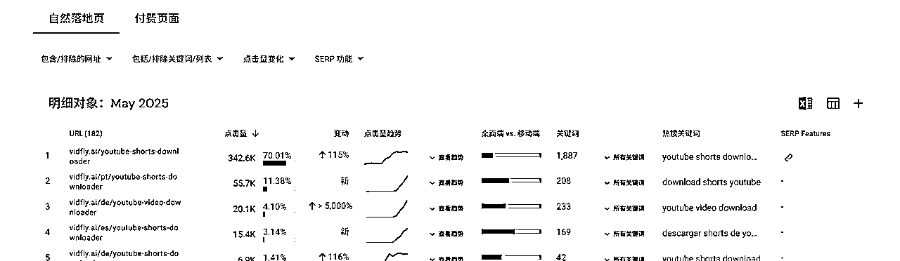
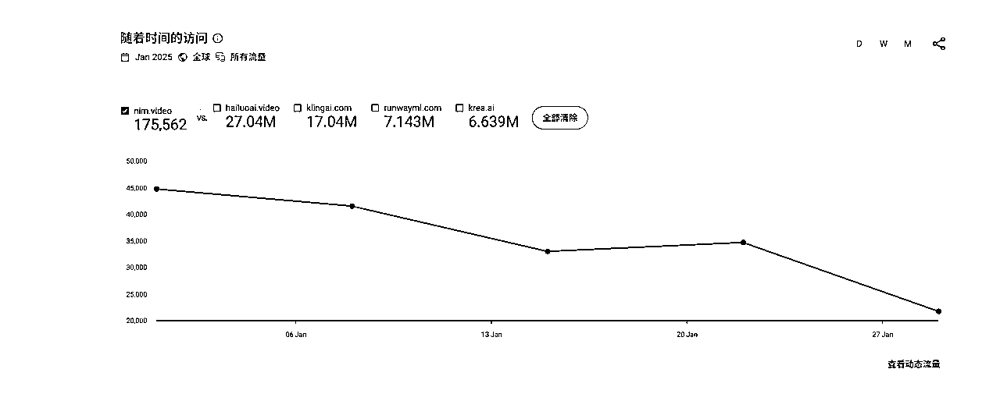
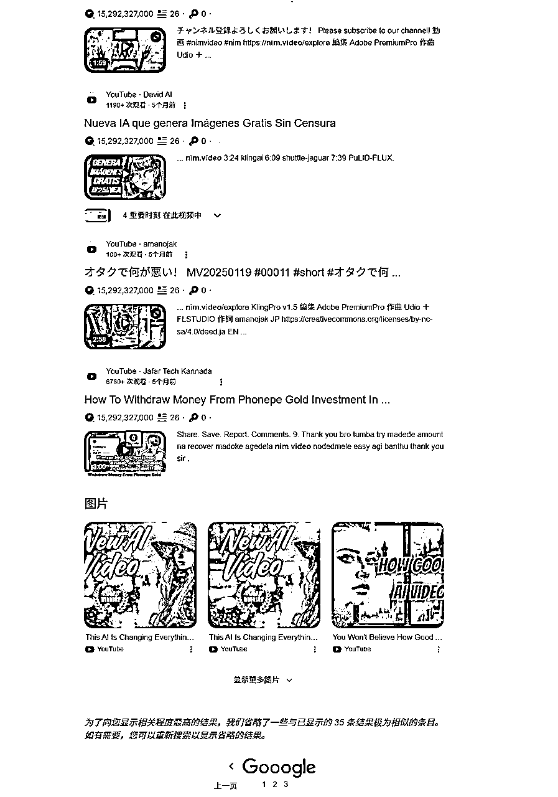
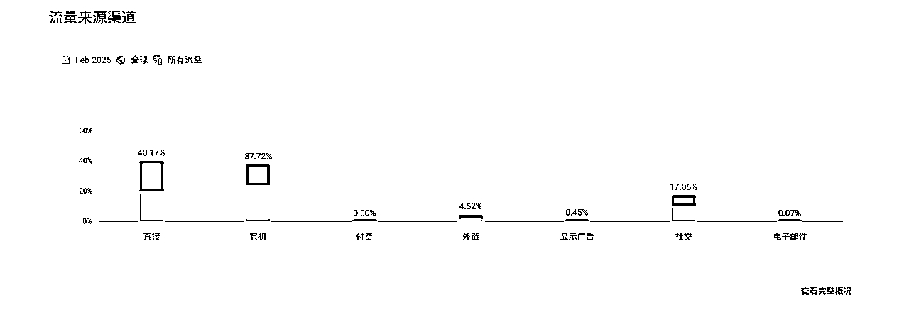
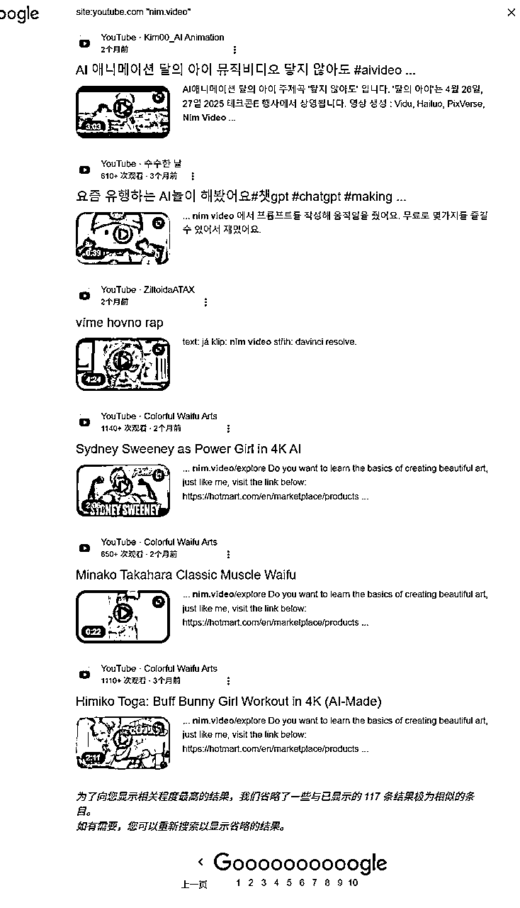
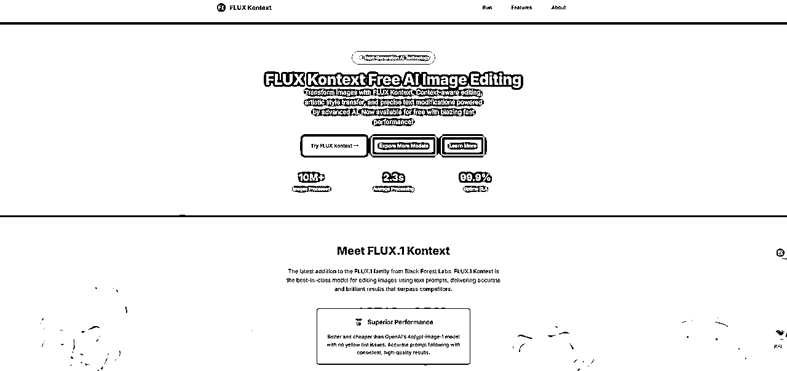

来源：https://jks4lzcz64.feishu.cn/docx/GOfRdi6fIocN8XxDghGck00Bnsh
圈友好，我是邬轼，目前在生财杭州SCAI实验室全职上站，做到了千刀收益，日常会看大量的网站，因为来这边后做AI站比较多，也积累了很多形形色色短期爆发的AI类网站，这篇网站我挑其中几个近半年起量的网站做分析。虽然说AI图像生成随着GPT4o，Flux Kontext等模型的发布，获得了巨大的生产力爆发。
这样的流量红利，一是给到了模型厂商，二是给到了下游的创作者。在网站领域完全从图像生成能够单点起量的网站越来越少，大多数可以起量的网站，都是结合了视频和图像各类创作功能的综合网站，从网站类型角度划分，大概分为套壳蹭词站，套壳品牌站，以及模型品牌站。
我们普通人并不具备模型训练、发布能力，所以我主要从前2种类型出发做一些网站案例的拆解。
https://vidfly.ai/
首先打开网站链接，然后用Aitdk插件，观察域名注册时间，去年8月22日注册的.ai域名网站，似乎早有规划。
但实际上打开web archieve（https://web.archive.org），2024年的页面快照稀稀疏疏，实际打开8月份的快照并没有任何页面响应，说明在8月份域名购买之后，网站并未实时上线，下一份网页快照已经来到了2024年的12月，打开之后，发现网页的响应样式还是有问题，但已经开始返回正常网页该有的各类html内容，说明这个网站是2024年12月才上线的。
这时候我们再来看一下这个网站的流量情况，现在是2025年7月，网站6月份的流量数据已经到了110w的月访问量，用半年时间把一个网站做了百万流量，这样的增长成绩，还是非常不错的。
那么这个网站是如何实现这样的增长的？我们打开similarweb可以看到这个网站近半年来的增长状况，大致分为2个阶段，从12月上线到4月，网站流量从0增长到了47w；从4月到6月，网站流量从47w增长到了110w。
这个网站如何从0增长到47w，使用similarweb选定网站2024年12月，然后看流量来源，可以发现，这个网站上线初期，就使用付费广告的方式为网站做冷启动，单月获取了2w的访问量，其中70%都是付费流量。
1月，放大了投放规模，依旧是70%的付费流量占比，但是流量规模扩大了6倍，当月流量来到了12w。
2月，付费流量占比降低，有机流量占比提升，网站的SEO初见效果，从webarchieve的快照可以看到，网站上线初期，就做了一些子工具页面获取SEO长尾流量，但当整体网站整体权重比较低的时候，其实子页面的效果会很差，甚至不出词，随着付费流量不断提升网站权重，SEO的长尾流量也开始获得一些反馈。
可以在3、4月的流量占比看到，自然搜索流量的占比进一步提升，付费流量进一步下降，整体访问量数据以每月10-15w的数据增长，同时网站的直接流量也在提升，已经形成了一定的品牌效应
4月到5月是一个分水岭，网站访问量直接从47w增长到了98w，可以说是翻倍，对比对量来源，直接流量、搜索流量、付费流量都实现了翻倍的增长。
如何找到网站流量爆发的原因？网站流量的增长都需要特定页面来承接流量，因此我们可以通过页面变化状况反推这个网站无论是免费还是付费流量，通过哪些特定的大流量niche页面实现了流量承接，从而给网站带来了流量爆发。
从网站的3月只有50个页面收录，到4月网站有170个页面收录，再到5月网站有近300个页面收录，通过大量新鲜子页面做流量承接，这个网站也完成了从0到百万流量的增长。

其中具体是哪个页面发挥了作用，看4月和5月的落地页承接破案了，是vidfly.ai/youtube-shorts-downloader这个页面作为流量承载页面，推动这个网站迅速实现了百万流量的突破。这的确是圈内人众所周知的大流量词，但是它的合规风险也很高，这个网站的流量增长其实也是在危险的边缘试探。

查询7月最新的页面变化状况，可以发现这个网站被收录的页面已经从巅峰的300变成了70多个页面，这也意味着上面提到的高流量承载页面给网站带来了风险，从而导致大量网站页面被K，但是看最近28天网站的访问量还是保持在巅峰110w左右的访问量，这里就存在一个可能，这些页面不是谷歌K掉的，而是站长自己下掉的。但真实情况如何，就不得而知了。
通过上述分析，我们见证了一个品牌套壳站，从0到1完整的过程，但是付费流量推动SEO增长的系统方法可能并不适合很多小个体，所以我们来看下第二个案例。
https://nim.video
同样的步骤，打开这个网站链接，然后看网站流量6月的访问量保持74w的访问量左右。观察域名注册时间是2024年的1月30日，但是实际打开webarchieve获取网页快照情况可以发现，这个网站是在2024年的11月11日上线的。
打开similarweb，观察这个网站近半年来的增长数据，可以看到网站从2024年的11月获取开始出现访问数据，当月是达到7w访问量，从去年11月到今年1月，网站的月访问量数据位置维持在5w到17w之间，然后从2月、3月迎来流量的大爆发。
我们先来研究下这个网站是如何实现冷启动的? 网站上线首月只有4个页面，没有任何付费流量，直接流量占比过半，社交流量占比30%，据此可以推断，这个网站是依靠社交媒体来实现冷启动增长的。
其中社交流量的大头居然是来自whatapp，由于whatapp账号比较难搞，我暂时无法得知具体情况，这意味着这个网站的冷启动来自于私域社群的传播。
但是来到12月，这个流量占比就发生了明显的变化，其中社交流量的大头来到了Youtube，当月的月访问量在5w。
找到源头视频。12月份，一个AI自媒体的推广视频推广视频获得了2w的观看，为网站带来不小的访问量，12月份youtube总共有30个左右与这个网站相关的视频，其中最高播放量只有2w，最低播放只有几十，但是将这个网站的流量带到了5w访问量。
来到1月，这个网站的流量来到了17w，流量的大头还是来自于社交媒体的传播，其中主要是youtube。

这个月，Youtube相关的视频依旧是30个左右，其中最高播放1.4w，最低播放500+，整体维持在千播水平，比上个月质量有所提高，同时视频以长视频为主，有长尾效应，推动网站访问量来到了单月17w访问。


2月份，这个网站的访问量来到了60w访问量，按照流量渠道来分，有机流量和直接流量基本打平，但是有机流量的增长和网站的SEO没有任何关系，这个网站实际上没有做任何SEO增长的动作。


那么为什么是是实现了流量的翻倍？还是从社媒找原因，这个月，网站的youtbe相关视频来到了70个左右，社媒宣传动作扩大加上网站的老用户的维持，让整体流量实现了翻倍。
但是视频类型格式不一，显然不是来自于统一的运营手法，返回网站首页，可以发现这样三个不一样的创作者激励计划，分别是面向AI自媒体的教育激励计划，面向推广分成的联盟营销计划，以及面向使用者的创作激励计划。这样细颗粒度的用户激励计划区分，也促进了该网站流量的迅速增长。
3月份，这个网站的访问量直接来到了130w，依旧主打社媒传播，同时品牌流量的占比100%。其中82%的社交流量来自于Youtube。

增长的原因并不复杂，这个月，youtube有关这个网站相关的视频来到了110个，推动了网站访问量的迅速提升。
4月访问量111w，5月访问量98w，6月访问量74w，对应youtube视频传播的条数分别是100个、170个、180个。有意思的地方在于，为什么传播度提升了，网站访问量反而下降了，一个解释是，据观察到的情况，这和similarweb的估算算法调整有关系，我观察的很多网站在5月流量统计中，网站流量都出现了大幅下跌的状况。

这是我观察到第二类网站起量的思路，通过社媒的红人合作和比较完善的针对性用户激励计划推动网站的流量增长。下面我们转入第三种。
这一类SEO玩法的鼻祖是小排老师最初实践的，哥飞老师社群推广开来的玩法，由于涉及非常多圈友群友正在赚钱的网站，而且是谁的网站我也并不清楚，所以很多网站我不便透露出来。我选一个使用这种玩法但没有赚钱的网站做个参考。
我们知道，传统SEO的实现增长的效果非常缓慢，涉及非常多的页面优化流程，外链建设手段，同时需要经历长时间的等待，才能逐渐见效。那有没有什么快一点的办法，这个办法很好理解，就是找到一个最近爆发，刚出现的新词，这个新词在爆发初期，竞争一定是不激烈的，这时候切入，拿到来自搜索渠道的流量就相对容易。
我们可以看一个最近不算太远的案例，这个词是flux kontext，开始出现搜索量的时间是5月29日，这是一家德国人工智能企业发布的新图像编辑模型，对标chatgpt4o，但价格更加低廉，可以通过口喷实现图像编辑的效果，从网站增长角度，这是图像领域网站获得增长一个新机会。

我们可以来看下我们分享的第三个网站，6月的访问数据将近1w，虽然访问量不算大，但是看下这个破破烂烂的网站首页，我想，你不禁也会来一句“我上我也行”，的却如此，在AI如此发达的今天，实现比他更好的网站其实也没有什么难度。
https://www.fluxkontext.com/

网站注册时间是2025年5月28日，几乎是模型当天发布就注册并上线了网站，这个网站实际上没有任何变现，包括广告，它是一个倒流站，为一家新兴的api聚合网站倒流，当时主要是卖它的flux kontext api接口。
并且由于是新词，实际simliarweb的统计数据可能并不精准，实际数据要比这高1-2倍是正常的，如果这是一个正常的订阅网站，可能只需要短短几天，月入千刀的目标就实现了。
这种SEO增长的手法非常简单粗暴，找到即将爆发的新词，注册一个相同关键词的域名，上线一个网站，用广告、联盟营销或者订阅服务实现闭环，找需求和做流量一气呵成。但困难之处在于非常早的踩中即将的爆发的热词，这需要非常敏感的流量洞察能力，但这通过持续的积累，观察，训练其实都可以实现。
以上就是我观察到的几种网站增长的打法，也是希望大家不要局限单一的思路，产品做增长的渠道其实非常多样，挑选适合自己的即可，希望大家读完都有收获！
祝大家早日月入万刀！